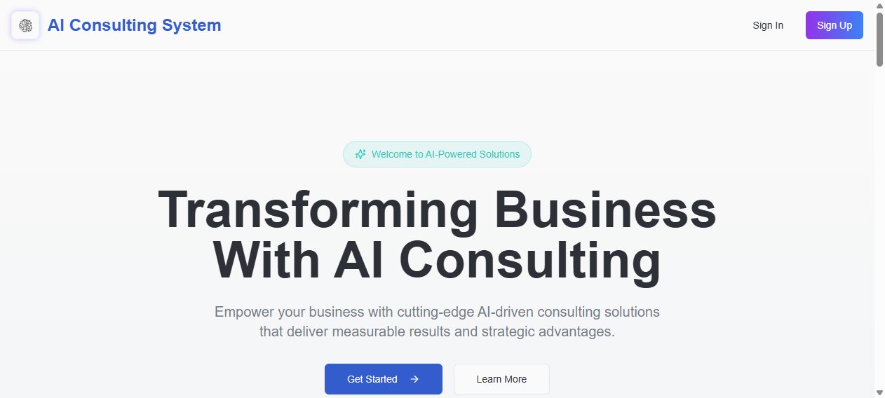

AI Consulting System
A production expert system where one interface routes users to four specialized LLM consultants — Education, Healthcare, Finance and Retail — each with its own domain-tuned prompting strategy. The architecture became the basis of my published research paper, "AI-Driven Consulting: A Smart Expert System for Diverse Domains."

01 The problem
A single general-purpose chatbot performs poorly across specialized consulting domains: answers drift, tone is generic, and domain constraints (medical caution, financial disclaimers, retail context) get lost. The goal was one product that behaves like four different domain experts without four separate apps.
02 Architecture
- Domain routing: the app resolves which vertical a conversation belongs to and hands it to that domain’s agent configuration.
- Domain-tuned prompt chains: each vertical carries its own system prompting, tone rules and constraint set — the core of the expert-system behavior.
- Real-time persistence: conversations persist through Firebase so sessions survive reloads and can be resumed.
- Authentication: Clerk handles identity so each user’s consulting history stays private.
- App shell: Next.js 15 + TypeScript + Tailwind with Radix UI primitives and Framer Motion transitions.
03 Results
The system ships in production and the architecture was formalized into an international research publication. It demonstrates the pattern I use at work daily: specialized LLM agents beat one generic model when each carries domain-scoped prompting and constraints.